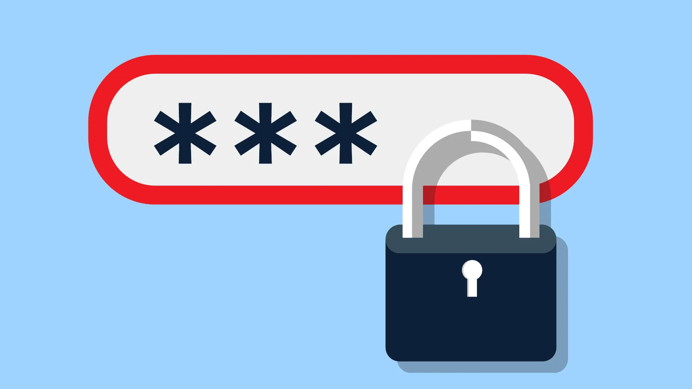

¿QUÉ PODEMOS HACER PARA FORTALECER NUESTRA SEGURIDAD?
Cambiar contraseñas periódicamente
No repetir contraseñas en distintos sitios
Mantener nuestro software actualizado
Evitar almacenar en dónde sea nuestros accesos

TENER PRECAUCIÓN, PERO NO CAER EN LA PARANOIA
Si nos habituamos a realizar las practicas aquí expuestas y tomamos el asunto con la responsabilidad que merece, es muy probable que todo salga bien

2FA: UNA GRAN AYUDA
El segundo factor de autenticación es una opción que nos permitirá agregar una capa adicional de seguridad a nuestros accesos en aquellos sitios en los cuales se encuentre habilitado. Es realmente útil y en caso de estar disponible debería estar siempre activado.